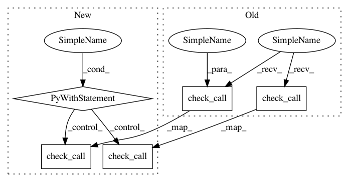

51894da4d9c4c4186c1b4ce34b2cf53737f0dab5,rnaseq/src/run_SamToFastq.py,,,#,10
Before Change
subprocess.check_call("mkfifo /tmp/read1_pipe /tmp/read2_pipe /tmp/read0_pipe", shell=True)
// Set gzip streams
subprocess.check_call("gzip -"+args.gzip+" -c < /tmp/read1_pipe > "+fastq1+" &", shell=True)
subprocess.check_call("gzip -"+args.gzip+" -c < /tmp/read2_pipe > "+fastq2+" &", shell=True)
subprocess.check_call("gzip -"+args.gzip+" -c < /tmp/read0_pipe > "+fastq0+" &", shell=True)
// SamToFastq (write to pipes)
subprocess.check_call("java -jar -Xmx8g /picard-tools/picard.jar SamToFastq INPUT="+args.bam_file\
After Change
os.makedirs(args.output_dir)
// Make named pipes for gzip
with cd(args.output_dir):
fastq1 = args.prefix+"_1.fastq.gz"
fastq2 = args.prefix+"_2.fastq.gz"
fastq0 = args.prefix+"_unpaired.fastq.gz"
subprocess.check_call("mkfifo read1_pipe read2_pipe read0_pipe", shell=True)
// Set gzip streams
subprocess.check_call("gzip -"+args.gzip+" -c < read1_pipe > "+fastq1+" &", shell=True)
subprocess.check_call("gzip -"+args.gzip+" -c < read2_pipe > "+fastq2+" &", shell=True)
subprocess.check_call("gzip -"+args.gzip+" -c < read0_pipe > "+fastq0+" &", shell=True)
// SamToFastq (write to pipes)
subprocess.check_call("java -jar -Xmx8g /opt/picard-tools/picard.jar SamToFastq INPUT="+args.bam_file\
+" INCLUDE_NON_PF_READS="+args.include_non_pf_reads\
+" INCLUDE_NON_PRIMARY_ALIGNMENTS="+args.include_non_primary_alignments\
+" VALIDATION_STRINGENCY=SILENT FASTQ=read1_pipe SECOND_END_FASTQ=read2_pipe UNPAIRED_FASTQ=read0_pipe", shell=True)
// Delete named pipes
subprocess.check_call("rm read1_pipe read2_pipe read0_pipe", shell=True)
// Delete unpaired reads FASTQ if empty
with open(fastq0, "rb") as f0:
f0.seek(-4,2)
if struct.unpack("<I", f0.read(4))[0]==0: // empty file
os.remove(fastq0)
print("["+datetime.now().strftime("%b %d %H:%M:%S")+"] Finished SamToFastq", flush=True)
In pattern: SUPERPATTERN
Frequency: 3
Non-data size: 5
Instances
Project Name: broadinstitute/gtex-pipeline
Commit Name: 51894da4d9c4c4186c1b4ce34b2cf53737f0dab5
Time: 2016-09-22
Author: francois@broadinstitute.org
File Name: rnaseq/src/run_SamToFastq.py
Class Name:
Method Name: